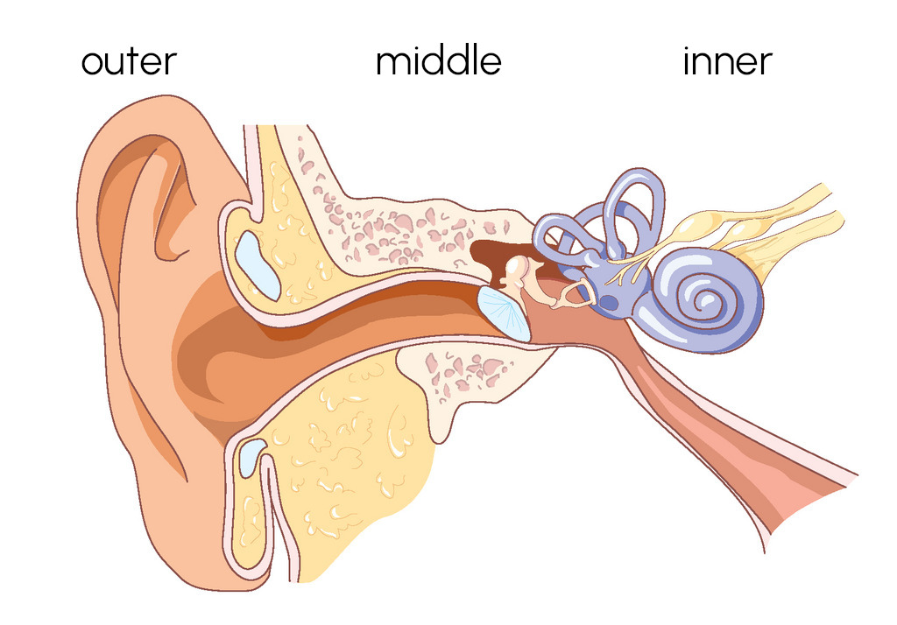

Human Speech
Psychology, PPLS
University of Edinburgh
2025-01-21
we read a passage aloud
speed of reading affected by speed of “imagined voice”
suggests link between speech and writing
4 epileptic participants; intracranial electrodes
discrimination tests identify areas of auditory cortex sensitive to speech (gamma, 50–150Hz)
read the grey words; ignore the white ones
Perrone-Bertolotti et al. (2012)
“northern”
There was a young runner from Bath
Who stumbled and fell on the path;
She didn’t get picked,
As the coach was quite strict,
So he gave the position to Kath.
“southern”
There was an old lady from Bath,
Who waved to her son down the path;
He opened the gates,
And bumped into his mates,
Who were Gerry, and Simon, and Garth.
Filik & Barber (2011)
Ph.D. student Ella was summoned to her supervisor Jim ʼsoffice to give a report on her current progress. Ella asked for an extension, but Jim looked concerned.
He said that they really needed those data in by next month for that conference.
He said: “Hmm, we really need those data in by next month for that conference.”
Frank and his friends were visiting some lovely places on their trip to Germany last year.
(DS) He told the group: “I really liked the bells of the church that …
(IS) He told the group that he really liked the bells of the church that …
(NS) It seemed that he really liked the bells of the church that …
Yao & Scheepers (2018)
logic behind the promise: Emoji are a way of escaping the limitations of written language
truth of the matter: not very much persuasive research
üôÇ When the guest returned to the hotel later there was nobody to be seen
Charlotte returned to her private study and started working on her essay üôÅ
Robus et al. (2020)
Sky spotted Erin across the room at the party and noticed that she was looking a bit scruffy. She texted her to say, ‚ÄúI see you made an effort üòâ‚Äù
sarcastic
Sky spotted Erin across the room at the party and noticed that she was looking a bit scruffy. She texted her to say, ‚ÄúI see you didn‚Äôt make much effort üòâ‚Äù
literal
will Erin think that Sky thought she hadn’t bothered to dress up?
very unlikely—1 2 3 4 5 6 7 8—very likely
will Erin think that Sky is being sarcastic?
very unlikely—1 2 3 4 5 6 7 8—very likely
emoji can “help older people understand sarcasm”
but NB., same pattern seems to apply to literal text
Garcia et al. (2022)
not much evidence that they help communication
not surprising:
we have had emoji since 1999 (wikipedia)
we have had language for hundreds of thousands of years (maybe millions: Keys, 2024)
language is way cooler than pictures üëÖ
complex physical apparatus
brain plans sequences of sounds
speech constantly monitored, internally and externally
leads to disfluency
leads to stuttering
complicated physical apparatus
distinguishes phonemes, assembles into words
highly sensitive to context
sensitive to non-verbal (paralinguistic) signals

we are comprehending “speech” even when we’re not comprehending speech